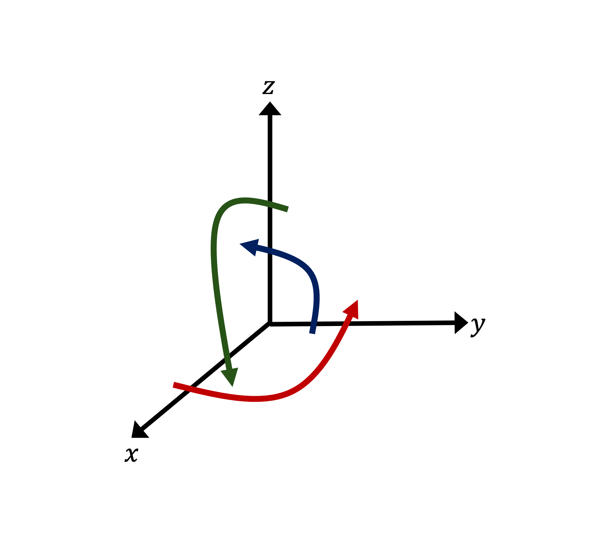
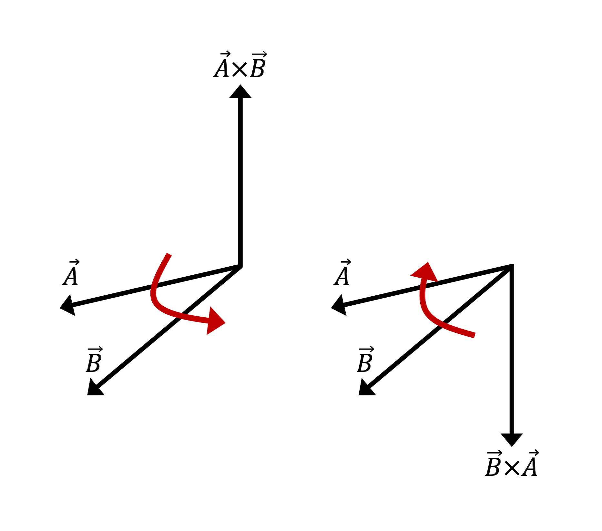
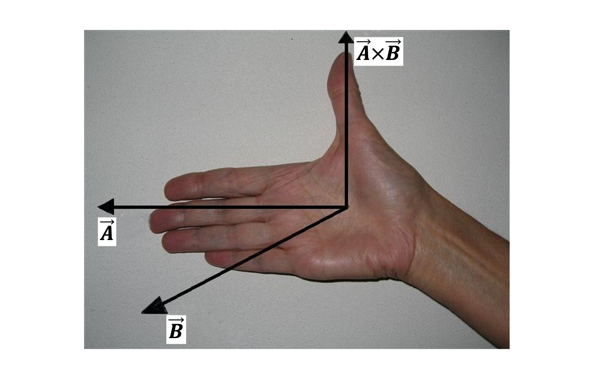
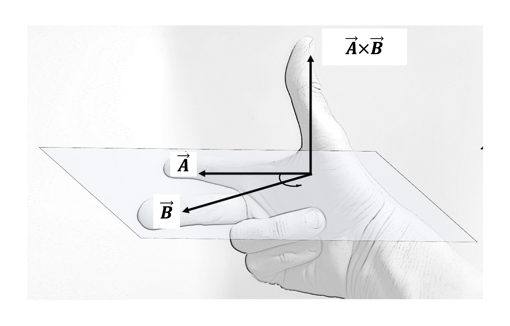
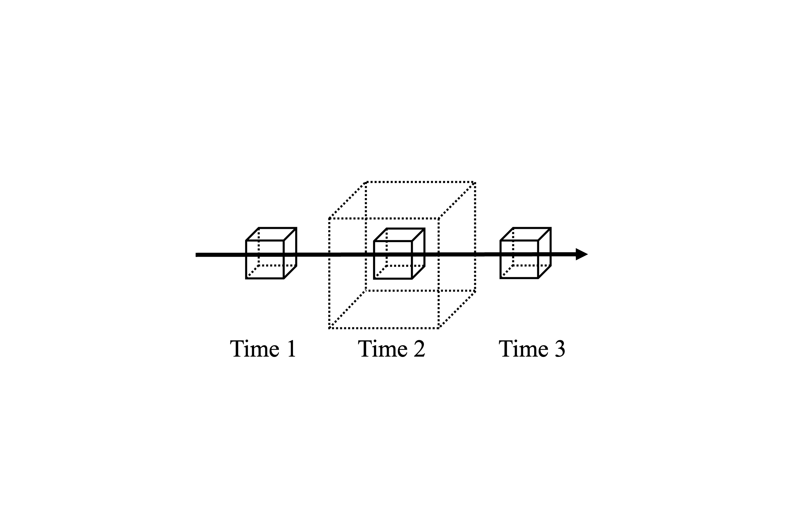
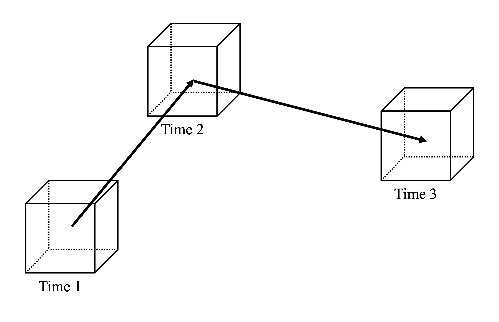

Section 1.2 Calculus
If we further assume state variables are described by differentiable functions of time and three-dimensional space (i.e., if we assume the values any given state variable takes on do not sharply jump from volume element to volume element, but instead vary continuously and smoothly in time and space), then we can apply calculus and differential equations to describe and predict changes in these atmospheric properties.
We will review relevant calculus below as well as introduce a twist on the chain rule for multivariable functions that helps us view atmospheric flow from different physical perspectives.
Subsection 1.2.1 Partial differentiation
A function \(f(x)\) has an ordinary derivative denoted by \(f'(x)\) (called Lagrange’s notation or prime notation) or \(\dfrac{df}{dx}\) (called Leibniz’s notation). "Ordinary" means \(f\) is a function of only one independent variable.
In meteorology, we typically deal with more complicated functions of several independent variables denoting time and space.
Consider a state variable \(f = f(x,y,z,t)\) measured within an air parcel. While \(f\) is depicted here as a scalar quantity for simplicity, be aware that it could represent a vector quantity.
To isolate the rate at which \(f\) is changing as \(x\) changes, we take the partial derivative of \(f\) with respect to \(x\text{.}\) This partial derivative is denoted by \(f_x\) or \(\dfrac{\partial f}{\partial x}\text{;}\) the latter notation is preferred in this text.
When finding \(\dfrac{\partial f}{\partial x}\text{,}\) we hold \(y\text{,}\) \(z\text{,}\) and \(t\) constant. It follows that an alternative, explicit notation for the partial derivative of \(f\) with respect to \(x\) is
\begin{equation}
\frac{\partial f}{\partial x}
=
\left(
\frac{\partial f}{\partial x}
\right)_{y,z,t}\tag{1.2.1}
\end{equation}
where the subscripts indicate which independent variables are held constant.
Likewise,
\begin{equation}
\frac{\partial f}{\partial y}
=
\left(
\frac{\partial f}{\partial y}
\right)_{x,z,t}\tag{1.2.2}
\end{equation}
\begin{equation}
\frac{\partial f}{\partial z}
=
\left(
\frac{\partial f}{\partial z}
\right)_{x,y,t}\tag{1.2.3}
\end{equation}
\begin{equation}
\frac{\partial f}{\partial t}
=
\left(
\frac{\partial f}{\partial t}
\right)_{x,y,z}\tag{1.2.4}
\end{equation}
While the subscripts often will be omitted for brevity, we will use them whenever greater clarity about which independent variables are held constant is needed.
Subsection 1.2.2 Vector algebra and calculus
Section 1.2.1 of Martin has a very thorough review of relevant vector algebra and calculus, and you should work through it carefully. A few especially important or possibly less familiar topics are briefly discussed next.
Subsubsection 1.2.2.1 Right-hand rule
The right-hand rule is a convention used to define the orientations of coordinate axes and vectors. The \(x\)-, \(y\)-, and \(z\)-axes of the three-dimensional Cartesian coordinate system are oriented perpendicular to each other following the right-hand rule (Figure 1.2.1(a)), and the right-hand rule determines the direction of the vector that results from the cross product of two other vectors (Figure 1.2.1(b)). See Wikipedia’s right-hand rule page for instructions and visuals on how to use the right-hand rule either with your index and middle fingers and thumb or with curled fingers.


Two options for finding the orientation of the vector that results from the cross product of two other vectors by applying the right-hand rule to a human’s right hand are shown in Figure 1.2.2 below. Make sure to use the right hand, not the left hand, or the results of your cross products will point opposite their correct directions!


Subsubsection 1.2.2.2 Del
The operator
\begin{equation*}
\nabla = \hat{i} \, \frac{\partial}{\partial x} + \hat{j} \, \frac{\partial}{\partial y} + \hat{k} \, \frac{\partial}{\partial z}\text{,}
\end{equation*}
which is called del, nabla, or the gradient operator, is used to find the following important quantities.
-
The gradient of \(f\text{,}\)\begin{equation*} \nabla f\text{,} \end{equation*}gives the magnitude and direction of the maximum change of the scalar field \(f\text{.}\)
-
The divergence of \(\vec{F}\text{,}\)\begin{equation*} \nabla \cdot \vec{F}\text{,} \end{equation*}gives the outward flux of the vector field \(\vec{F}\text{.}\)
-
The curl of \(\vec{F}\text{,}\)\begin{equation*} \nabla \times \vec{F}\text{,} \end{equation*}gives the rotation of the vector field \(\vec{F}\text{.}\)
-
The Laplacian of \(f\text{,}\)\begin{equation*} \nabla^2 f = \nabla \cdot \nabla f\text{,} \end{equation*}gives the divergence of the gradient of the scalar field \(f\text{.}\)
-
\(\nabla^2 = \nabla \cdot \nabla = \dfrac{\partial^2}{\partial x^2} + \dfrac{\partial^2}{\partial y^2} + \dfrac{\partial^2}{\partial z^2}\) is called the Laplace operator. It occasionally is given by the symbol \(\Delta\text{.}\)
-
Subsubsection 1.2.2.3 Properties of dot and cross products
We will employ several properties of dot and cross products in derivations. Wikipedia’s dot product page and cross product page list many useful properties, and I recommend the reader refer to them as needed. Some properties we will use in derivations include
-
scalar multiplication with a cross product\begin{equation*} \left( k \, \vec{a} \right) \times \vec{b} = \vec{a} \times \left( k \, \vec{b} \right) = k \left( \vec{a} \times \vec{b} \right)\text{,} \end{equation*}where \(k\) is a scalar;
-
the distributive property of a cross product over addition\begin{equation*} \vec{a} \times \left( \vec{b} + \vec{c} \right) = \vec{a} \times \vec{b} + \vec{a} \times \vec{c}\text{;} \end{equation*}and
-
the vector triple product\begin{equation*} \vec{a} \times (\vec{b} \times \vec{c}) = (\vec{a} \cdot \vec{c}) \, \vec{b} - (\vec{a} \cdot \vec{b}) \, \vec{c} \end{equation*}and\begin{equation*} (\vec{a} \times \vec{b}) \times \vec{c} = (\vec{a} \cdot \vec{c}) \, \vec{b} - (\vec{b} \cdot \vec{c}) \, \vec{a}\text{.} \end{equation*}
Subsection 1.2.3 Taylor series
You learned in a calculus course that an infinitely differentiable function \(f(x)\) can be approximated by—and sometimes perfectly represented by—its Taylor series expansion at \(x=a\) as given by
\begin{align}
f(x) \amp \approx \sum_{n=0}^{\infty} \frac{f^{(n)}(a)}{n!}(x-a)^n\notag\\
\amp = f(a) + f'(a)(x-a) + \frac{f''(a)}{2}(x-a)^2\notag\\
\amp \quad + \frac{f^{(3)}(a)}{6}(x-a)^3 + \dots\tag{1.2.5}
\end{align}
Subsubsection 1.2.3.1 \(n^{\mathrm{th}}\)-order approximations
We often create an \(n^{\mathrm{th}}\)-order approximation of \(f(x)\) using its \(n^{\mathrm{th}}\)-order Taylor polynomial, which is the polynomial of degree \(n\) formed from the \(n^{\mathrm{th}}\) partial sum of (1.2.5). For example, the first-order approximation of \(f(x)\) (also called its linear approximation) is given by its first-order Taylor polynomial
\begin{equation}
f(x) \approx f(a) + f'(a)(x-a)\tag{1.2.6}
\end{equation}
and the second-order approximation of \(f(x)\) is given by its second-order Taylor polynomial
\begin{equation*}
f(x) \approx f(a) + f'(a)(x-a) + \frac{f''(a)}{2}(x-a)^2
\end{equation*}
In many atmospheric dynamics applications, terms of second order and higher are grouped together as "higher-order terms" and are neglected in Taylor series expansions of state variables. Thus, state variables often are represented by their first-order approximations.
Subsection 1.2.4 Total differentiation
Consider a state variable \(f = f(x,y,z,t)\) measured within an air parcel. Again, while \(f\) is depicted here as a scalar quantity for simplicity, be aware that it could represent a vector quantity.
Since the air parcel’s position changes with time as it moves through the atmosphere, \(x = x(t)\text{,}\) \(y = y(t)\text{,}\) and \(z = z(t)\text{.}\) Consequently, \(f\) is a differentiable function of \(t\text{,}\) and so we can quantify the time rate of change of \(f\) within the air parcel by calculating \(\dfrac{df}{dt}\text{.}\) We do this using the chain rule for multivariable functions:
\begin{equation}
\frac{df}{dt} =
\frac{\partial f}{\partial x} \frac{dx}{dt} +
\frac{\partial f}{\partial y} \frac{dy}{dt} +
\frac{\partial f}{\partial z} \frac{dz}{dt} +
\frac{\partial f}{\partial t} \frac{dt}{dt}\tag{1.2.7}
\end{equation}
\begin{equation}
\frac{df}{dt} =
\frac{\partial f}{\partial t} +
\frac{\partial f}{\partial x} \frac{dx}{dt} +
\frac{\partial f}{\partial y} \frac{dy}{dt} +
\frac{\partial f}{\partial z} \frac{dz}{dt}\tag{1.2.8}
\end{equation}
where the terms have been rearranged to match standard presentations.
Furthermore, \(u = \dfrac{dx}{dt}\text{,}\)\(v = \dfrac{dy}{dt}\text{,}\) and \(w = \dfrac{dz}{dt}\) are the zonal, meridional, and vertical components of the air parcel’s full (three-dimensional) velocity (i.e., wind) vector \(\vec{u} = u \, \hat{i} + v \, \hat{j} + w \, \hat{k}\text{,}\) respectively, and so (1.2.8) becomes
\begin{equation}
\frac{df}{dt} =
\frac{\partial f}{\partial t} +
u \, \frac{\partial f}{\partial x} +
v \, \frac{\partial f}{\partial y} +
w \, \frac{\partial f}{\partial z}\tag{1.2.9}
\end{equation}
Finally, we can use the gradient of \(f\text{,}\) \(\nabla f = \dfrac{\partial f}{\partial x} \, \hat{i} + \dfrac{\partial f}{\partial y} \, \hat{j} + \dfrac{\partial f}{\partial z} \, \hat{k}\text{,}\) to rewrite (1.2.9) as
\begin{equation}
\frac{df}{dt} = \frac{\partial f}{\partial t} + \vec{u} \cdot \nabla f\tag{1.2.10}
\end{equation}
In most texts, \(\dfrac{df}{dt}\) is replaced with \(\dfrac{Df}{Dt}\) to emphasize this derivative differs from the ordinary derivative of a function of a single variable. Going forward, I will adopt this notation as shown in (1.2.11) below to be consistent with standard presentations.
\begin{equation}
\frac{Df}{Dt} = \frac{\partial f}{\partial t} + \vec{u} \cdot \nabla f\tag{1.2.11}
\end{equation}
Since \(f\) can be any scalar or vector state variable, we often write the total derivative as an operator:
\begin{equation}
\frac{D(\;)}{Dt}
=
\frac{\partial (\;)}{\partial t}
+
\vec{u} \cdot \nabla (\;)\tag{1.2.12}
\end{equation}
where any state variable—scalar or vector—could be inserted into the parentheses.
\begin{equation}
\frac{\partial f}{\partial t} = \frac{Df}{Dt} - \vec{u} \cdot \nabla f\tag{1.2.13}
\end{equation}
This arrangement more readily lends itself to physical interpretation. We interpret the terms of (1.2.13) as follows.
-
\(\dfrac{\partial f}{\partial t}\) is the Eulerian derivative (also called the local derivative) that gives the rate at which \(f\) is changing with respect to time \(t\) at a fixed geographic point (i.e., at a specific location on Earth’s surface or within its atmosphere) as air parcels move through that location. It is named after Leonhard Euler, who contributed significantly to fluid dynamics as well as mathematics, optics, astronomy, and other fields.
-
\(\dfrac{Df}{Dt}\) is the Lagrangian derivative (also called the total derivative, material derivative, substantial derivative, advective derivative, convective derivative, and individual derivative) that gives the rate at which \(f\) is changing with respect to time \(t\) within a moving air parcel, following the air parcel as it moves through Earth’s atmosphere. We can think of the Lagrangian derivative as describing sources and sinks of \(f\) within the air parcel. Sometimes it is described as the time rate of change of \(f\) "following the motion" or "with the flow." It is named after Joseph-Louis Lagrange, who succeeded and collaborated with Euler and also made significant contributions to these fields.
-
\(-\vec{u} \cdot \nabla f\) is advection: the rate of importation at a fixed location by the wind of some atmospheric property carried within air parcels. In particular, advection gives the rate of change of the atmospheric property at a fixed location on Earth, due to the transport of air parcels by the wind through the location.
-
Be careful about the negative sign! The negative sign is part of the advection formula, and therefore \(-\vec{u} \cdot \nabla f \lt 0\) for positive advection and \(-\vec{u} \cdot \nabla f \lt 0\) for negative advection.
-
The negative of advection, \(\vec{u} \cdot \nabla f\) (note the absence of the negative sign!), is called the convective derivative. Yes, this is confusing since the Lagrangian derivative also can be called the convective derivative. But in most sources, "convective derivative" refers to the negative of advection, not to the Lagrangian derivative.
-
For example, if we replace \(f\) in (1.2.13) with temperature \(T\) (which means we implicitly are assuming \(T = T(x,y,z,t)\)), we get
\begin{equation*}
\frac{\partial T}{\partial t} = \frac{DT}{Dt} - \vec{u} \cdot \nabla T
\end{equation*}
where \(\dfrac{\partial T}{\partial t}\) is the local time rate of change of temperature (i.e., the local temperature tendency), \(\dfrac{DT}{Dt}\) is the time rate of change of temperature within an air parcel caused by diabatic processes (i.e., it is the diabatic heating rate caused by radiative heating or cooling, latent heat release or absorption, conduction, and/or mixing of air parcel and environmental air), and \(-\vec{u} \cdot \nabla T\) is temperature advection, where
\begin{equation*}
-\vec{u} \cdot \nabla T \gt 0
\end{equation*}
for warm advection and
\begin{equation*}
-\vec{u} \cdot \nabla T \lt 0
\end{equation*}
for cold advection.
The difference between Eulerian and Lagrangian derivatives is visualized in Figure 1.2.3 below.


It becomes clear from (1.2.13) that the time rate of change of \(f\) measured at a fixed location on Earth is due to the advection by the wind of air parcels through the location as well as the changes in \(f\) inside the air parcels as they move through the location.
If \(\dfrac{Df}{Dt} = 0\text{,}\) we say \(f\) is conserved following the motion. In other words, \(f\) remains constant within air parcels as they move through the atmosphere. But (1.2.13) shows that, even if \(f\) is conserved within air parcels, local changes in \(f\) still can occur due to advection.
In summary, (1.2.11) and (1.2.13) give us two distinct but related frameworks by which we can measure the time rate of change of state variables: the Eulerian framework (i.e., the time rate of change measured at a fixed geographic location) and the Lagrangian framework (i.e., the time rate of change measured within a moving air parcel).